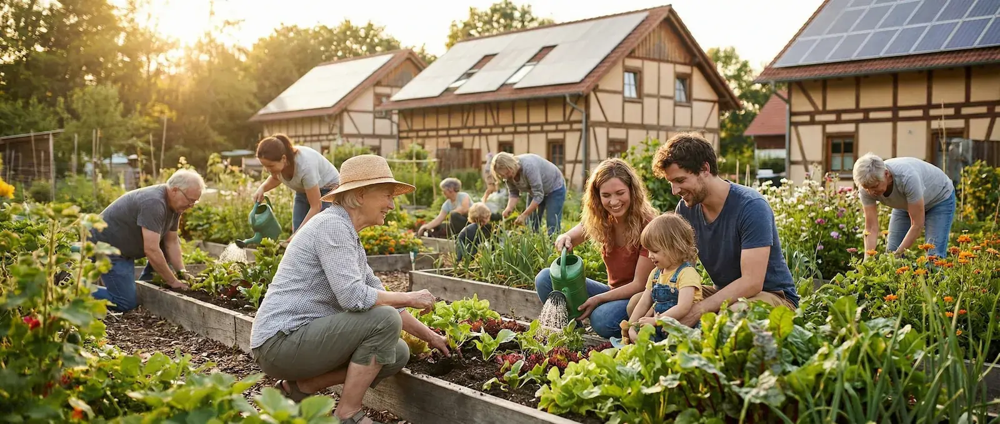

Welcome to Cloverville
Cloverville is a small eco-village where 42 people live sustainably. We grow our own vegetables, share resources, and care for the environment together.
Our Philosophy
Life in Cloverville is built on three core values: collaboration, fairness, and caring for nature. We believe in the "invisible work" – the small, daily actions that keep our community strong but often go unnoticed.
This website helps us visualize our collective impact. Every green action counts!